首次启用和配置闭环
验证一个新部署从未配置状态进入可用状态时，管理员能看到正确引导。
Mainline9 tests
- 未配置时引导到模型配置。
- 模型配置保存后，引导到数字员工和企业员工绑定。
- 旧路由会跳转到当前页面。
这份报告不是 Playwright 的技术明细，而是把当前 57 条 E2E 测试看成 20 条测试故事/路线： 从首次启用、配置中心、员工创建，到聊天协作、会话追踪、知识和记忆，再到全局壳层交互。
验证一个新部署从未配置状态进入可用状态时，管理员能看到正确引导。
验证管理员能在 Config 中看懂 Web、钉钉、飞书等入口配置，并安全处理凭证。
验证管理员能查看运行时 session、筛选入口和 actor，并清理会话。
验证 Web Chat 通过 WebSocket 正确展示连接、流式回复、转交过程和错误状态。
验证数字员工从草稿、校验、沙盒测试到发布的核心闭环。
验证已发布数字员工能出现在目录里，被企业员工绑定，并通过 Chat 和 Sessions 形成可追踪使用记录。
验证企业 tenant 创建后，数字员工目录、企业员工和个人 assistant 的关系能被串起来。
验证多员工协作日志可见，并且 Harness 可以运行 suite 和单个 workflow step。
验证一个 review 人可以通过截图快速看到 Dashboard、Builder 和员工目录状态。
验证用户在 Chat 发起请求后，销售员工能转交维修员工，并把协同过程和结果展示出来。
验证管理员能在 Sessions 中筛选、展开消息，并回到对应 Chat 运行上下文。
验证验收 Harness 页面能展示用例、Trace 报告、suite 运行反馈和长任务 StepRun。
验证切换企业后，Sessions 和协同日志不会串入另一个企业的数据。
验证用户日常会点到的全局按钮，包括侧栏、租户、主题、登出和移动端菜单。
验证知识库常见的 tab 筛选和危险删除动作，不只测试页面能打开。
验证管理员能检索记忆文件，打开后编辑、取消、保存，并回到列表。
验证配置页能显示密钥、测试模型连接，并保存 Web Chat 输入提示等面向用户的文案。
验证企业员工同步后，管理员能分配角色并绑定个人助手。
验证技能市场能展示租户技能包信息，并兼容旧 app query 链接。
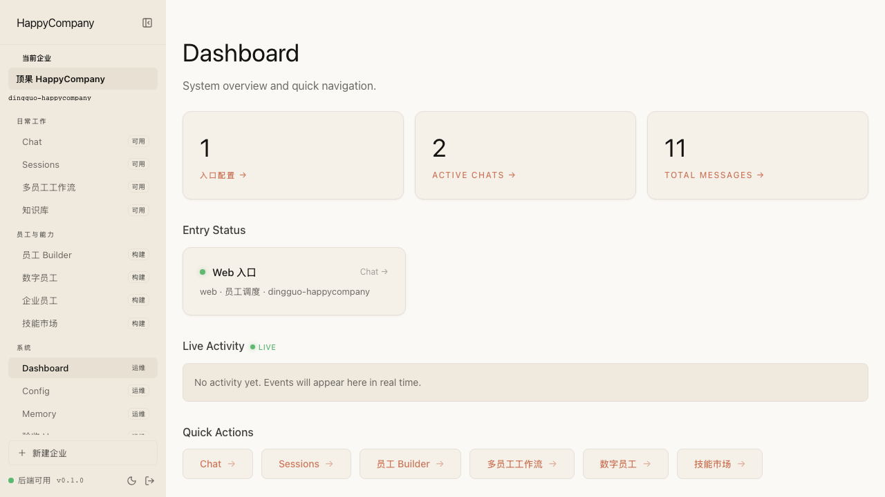
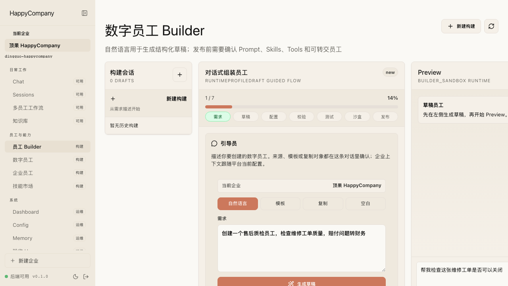
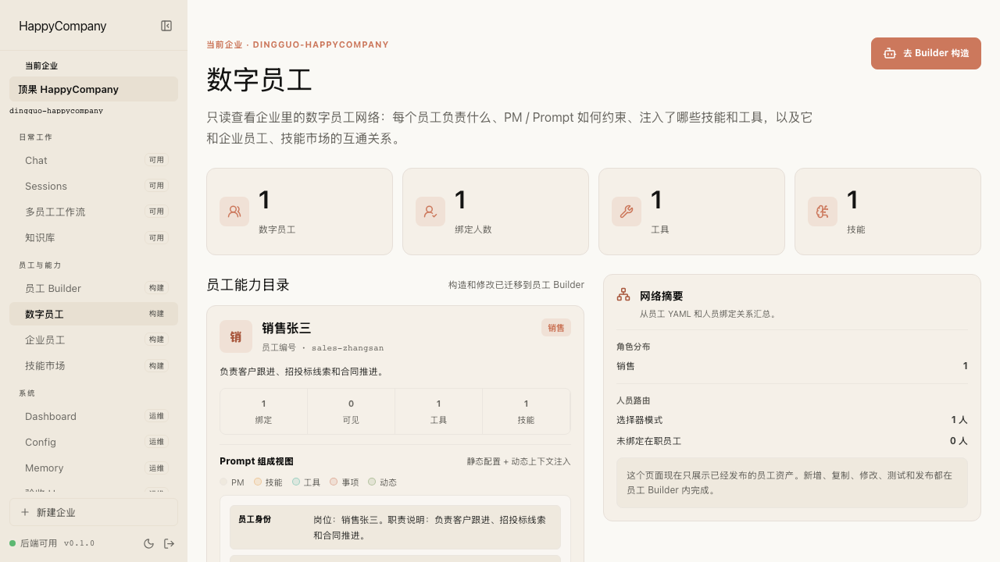
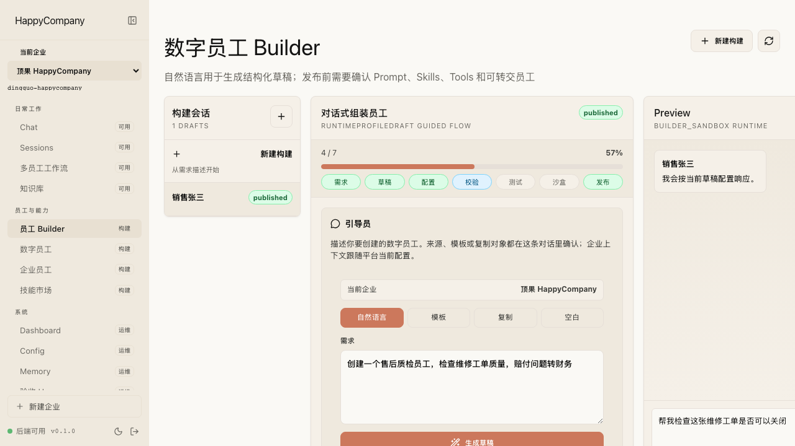
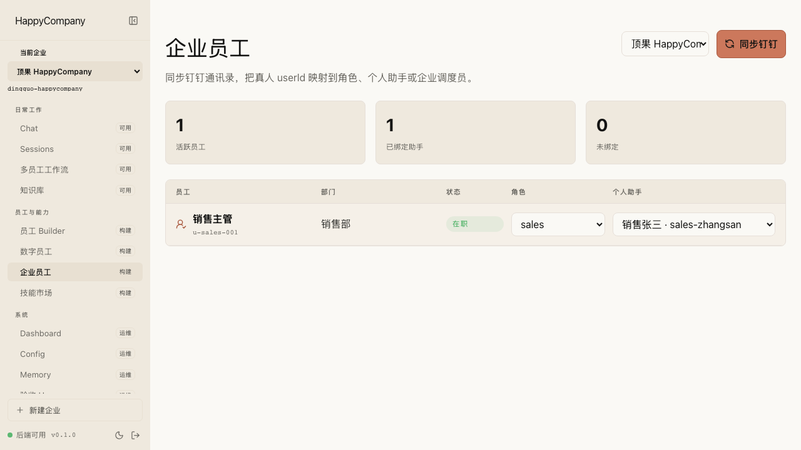
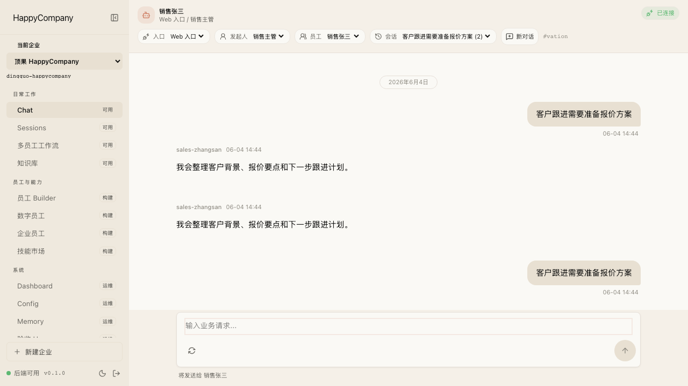
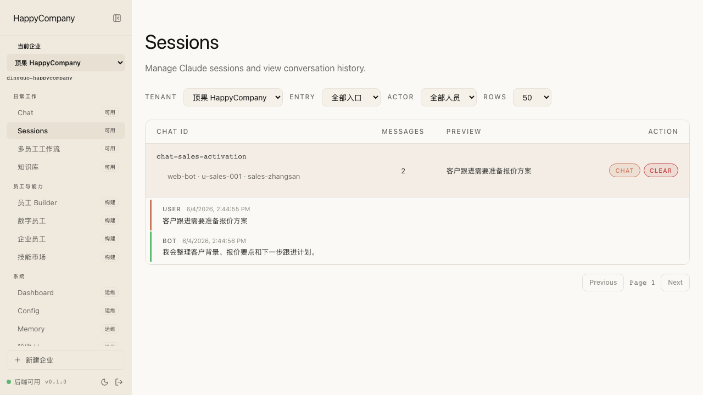
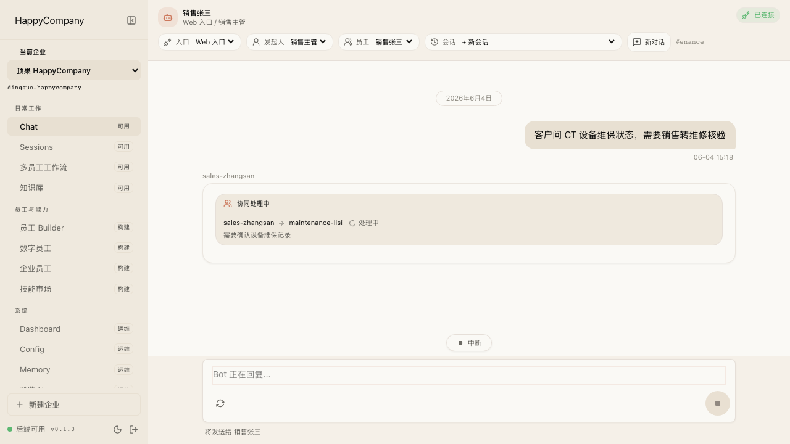
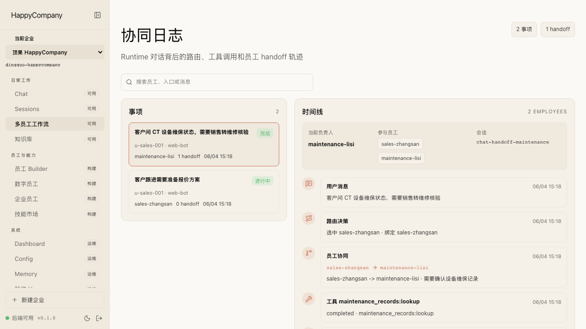
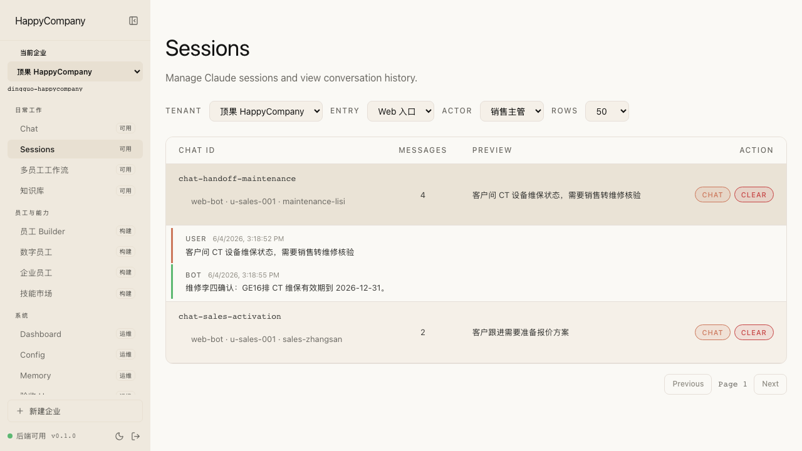
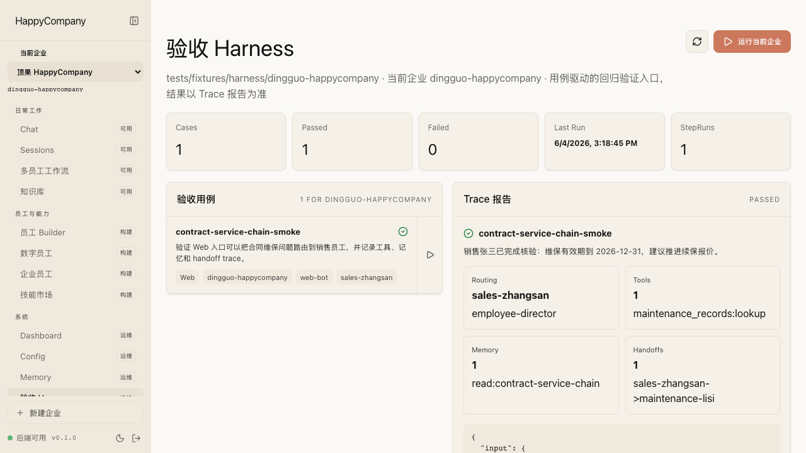
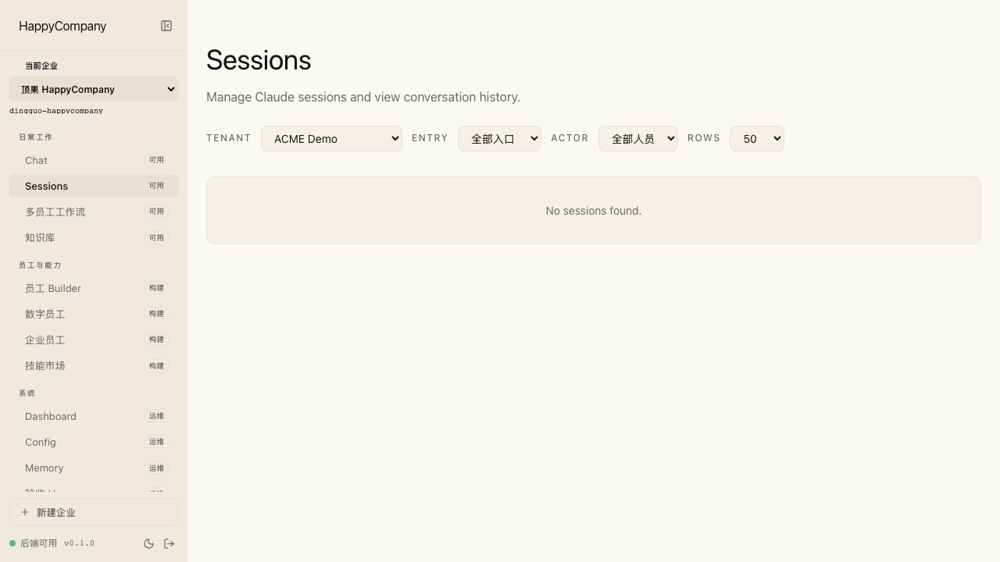
| 内部套件 | 产品用途 | 数量 | 本次结果 | 工程证据 |
|---|---|---|---|---|
| Mainline | 判断日常主线是否健康 | 7 个故事，42 条测试 | 42 passed | Playwright mainline report |
| Journey | 围绕一个功能或全链路生成截图报告 | 6 个故事，6 条测试 | 6 passed | Playwright journey report |
| Probe | 覆盖按钮、弹窗、编辑器等手点风险 | 7 个故事，9 条测试 | 9 passed | Playwright probe report |
已有 bootstrap 主线覆盖。只有当 onboarding 作为 release/demo 重点时，再补带截图 Journey。
Config 已有 Mainline 和 Probe。若后续做渠道 onboarding 迭代，再补一条 Journey。
它们已经覆盖关键交互，但还不是产品主 Journey；如果变成核心卖点，再提升为 Journey。
Memory 和 Sessions 的部分 select 缺少可访问 label，Probe/Journey 暂时用主区域 select 定位。建议后续给控件补 `aria-label` 或关联 label。
运行 `npm run e2e:story-report` 会生成 `docs/reports/2026-06-04-e2e-story-review.generated.html`。